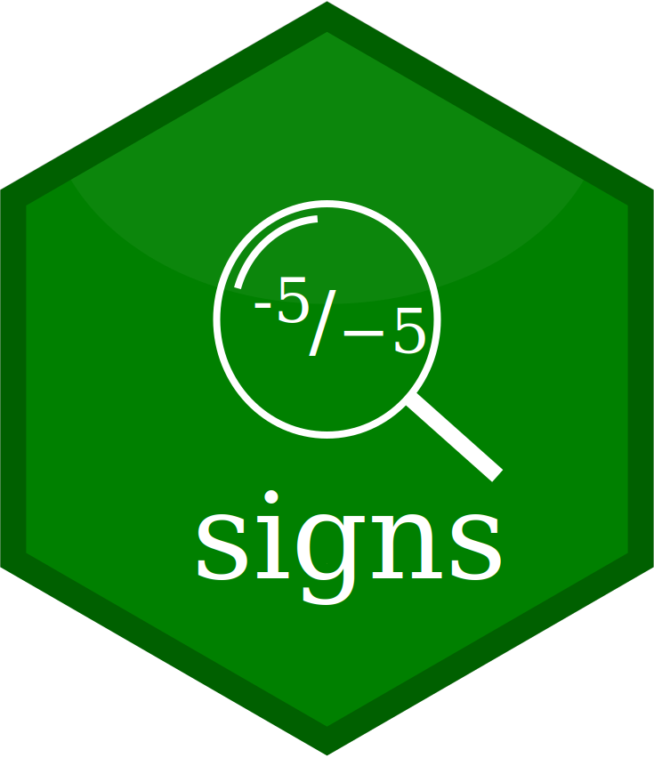

signs 
signs makes it easy to use typographically accurate minus signs in plots, markdown, dashboards, or other presentations.
Ask any typography nut, and they can walk you through the differences among 4 symbols that look nearly identical:
- the hyphen-minus (-, ASCII 45, next to the zero key)
- the en-dash (–, Unicode 2013, Alt+0151 on Windows)
- the em-dash (—, Unicode 2014, Alt+0150 on Windows)
- the true minus (−, Unicode 2212)
The true minus, when a typeface has one, is designed for mathematics. It has the same length and line thickness as the crossbar of the plus sign, and it sits at the same height above the baseline. By comparison, the hyphen-minus is quite a bit shorter and sits lower. Hyphens were designed, not for mathematics, but primarily for joining words.
Oddly there is no shortcut for true minuses on Windows. There are a few options on Mac, and of course major Linux distros like Ubuntu support entering Unicode. Fixed-width coding fonts that are intended for coding, such as FiraCode, use ligatures to mimic the minus glyph. But the Unicode minus will work with whatever presentation font you prefer, and it has the advantage of being understood properly by most screen readers.
For me, using a Unicode minus is like brewing high-end tea or wearing my favorite socks. Maybe nobody else notices, but it still looks good to me. If you like me enjoy the little things, this package may grow on you!
Example
Using signs is simple, especially if you’re familiar with functions like scales::number(), scales::number_format(), scales::comma(), scales::comma_format(), scales::percent(), and scales::percent_format(). It simply provides two new functions to complement these: signs::signs() and signs::signs_format().
See vignette("signs") for a full tour of the package.
Fixed-Width Fonts (indistinguishable)
The difference between minuses is impossible to see with most coding typefaces. That’s not a problem with the package; it’s just how fixed-width fonts work. (How ugly would your code look if characters had different widths?)
Plots (distinguishable)
We can see the difference in a plot.
- Points in group 1 are labeled with a true Unicode minus glyph:
signs(). So is the y-axis:signs_format(). - Points in group 2 are labeled with the traditional ASCII hyphen-minus:
scales::number(). - Basic usage is identical.
library(dplyr)
library(ggplot2)
library(ggrepel)
theme_set(theme_gray())
theme_update(panel.grid.minor = element_blank())
p <-
ggplot(sleep) +
aes(group, extra) +
geom_point() +
xlab("Drug") +
ylab("Extra Sleep (hours)")
label_hours <- function(mapping) {
geom_text_repel(
mapping,
nudge_x = -.1,
direction = "y",
segment.size = .4,
segment.color = "grey75",
hjust = "right"
)
}
p +
label_hours(
mapping = aes(
label = case_when(
group == 1 ~ signs(extra, accuracy = .1), # Unicode minuses
group == 2 ~ number(extra, accuracy = .1) # ASCII minuses
)
)
) +
scale_y_continuous(
limits = c(-4, 6),
breaks = seq(-4, 6),
labels = signs_format(accuracy = .1) # Unicode, analogous to number_format()
)